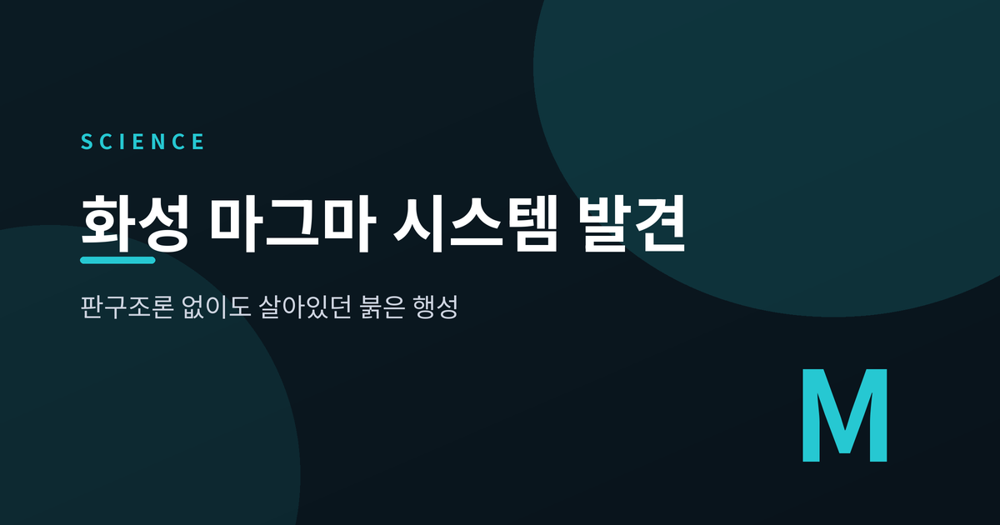
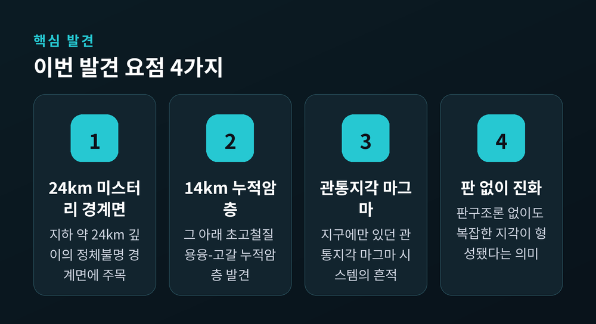
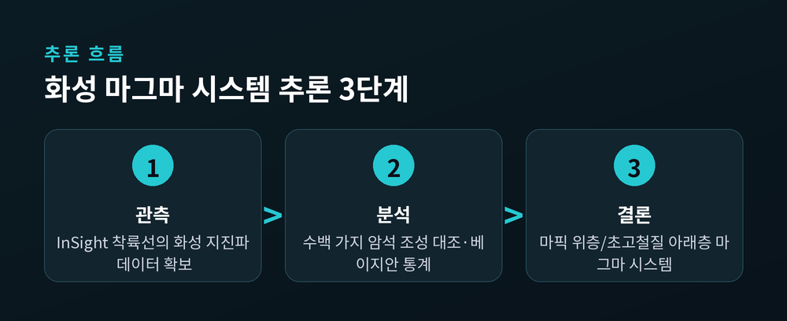
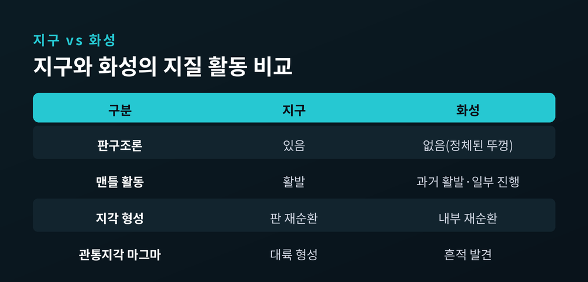

화성 마그마 시스템 발견 — 판구조론 없이도 살아있던 붉은 행성

화성 땅속에서 지구에서나 보이던 거대한 마그마 시스템의 흔적이 발견되었습니다.
2026년 6월, 옥스퍼드대 주도 연구팀이 그 증거를 Nature Astronomy에 실었습니다.
판구조론이 없는 행성에도 복잡한 지각이 만들어질 수 있다는 이야기입니다. 오늘은 이 발견이 무엇이고 왜 중요한지 정리해 보겠습니다.
무엇을 발견했나
연구팀은 화성 지하 약 24km 깊이의 정체불명 경계면에 주목했습니다.
논문상 정확한 값은 24.5±8.3km입니다. 이 경계의 존재는 예전부터 알려져 있었습니다. 다만 그것이 무엇을 뜻하는지는 아무도 몰랐던 것입니다.
이번 연구의 해석은 이렇습니다. 경계 위층은 현무암 계열의 마픽 암석, 아래층은 철과 마그네슘이 풍부한 초고철질 암석이라는 것입니다.
그 아래에는 약 14km 두께의 '용융-고갈된 누적암' 층이 자리합니다. 마그마가 식으며 무거운 결정이 가라앉아 쌓인 잔류물입니다.

어떻게 알아냈나
직접 땅을 파본 것은 아닙니다.
NASA의 InSight 착륙선이 남긴 지진 데이터가 출발점이었습니다. InSight는 2018년 화성에 최초의 지진계를 설치했습니다. 운석 충돌과 화성지진이 만든 지진파를 관측한 것입니다.
연구팀은 수백 가지 가능한 암석 조성을 지진 데이터와 대조했습니다.
상평형 모델링과 광물물리, 베이지안 통계를 함께 썼습니다. 쉽게 말하면 "이런 압력과 온도에서 이런 암석이라면 지진파 속도가 얼마일까"를 계산해, 실제 관측값과 맞춰본 셈입니다.
결과는 통계로 표현됩니다. 위층은 85.9% 확률로 마픽, 아래층은 90.8% 확률로 초고철질이었습니다.

왜 놀라운가
이런 관통지각 마그마 작용은 지금껏 지구에만 고유한 것으로 여겨졌습니다.
지구에서는 화산호 아래에서 이 과정이 일어나며 대륙 형성과 이어집니다. 깊은 지각의 용융물이 위로 솟고, 무거운 잔류물은 바닥에 쌓이는 식입니다.
화성에서 그와 닮은 흔적이 나온 것입니다.
화성은 흔히 '정체된 뚜껑' 행성으로 불립니다. 지구처럼 표면이 움직이는 판으로 쪼개져 있지 않습니다. 그래서 많은 과학자들은 화성이 복잡한 지각을 만들 조건을 갖추지 못했다고 보았습니다.
예전엔 판구조론이 그 모든 활동의 전제로 여겨졌습니다. 지금은 그 전제가 흔들립니다.

그래서 무슨 의미인가
마그마와 지각의 재순환은 행성이 대기와 바다, 거주가능 환경을 갖추는 방식과 맞닿아 있습니다.
그동안은 이런 조건에 판구조론이 필수라고 보았습니다. 이번 결과는 그 없이도 가능함을 시사합니다.
외계행성을 볼 때 거주가능성의 기준을 넓힐 수 있다는 뜻입니다.
연구진은 자원 가능성도 언급했습니다. 지구에서 이런 장기 마그마 시스템은 대규모 금속 광상을 만드는 것으로 알려져 있습니다. 다만 이는 전망일 뿐, 논문이 매장량을 직접 측정한 것은 아닙니다.
아직 확정된 것은 아닙니다
이 발견은 단정이 아니라 해석입니다.
논문 스스로 이 경계면의 본질은 "미해결로 남아 있다"고 밝힙니다. 통계적으로 강하게 지지했을 뿐, 확정한 것은 아닙니다.
한계도 분명합니다. 지진계는 화성에 단 한 대뿐이었습니다. 분석은 착륙지 바로 아래의 국지 구조를 제약한 것입니다. "북반구로 수천 km 뻗어 있다"는 표현도 가능성이지 확증은 아닙니다.
이 거대한 시스템은 주로 먼 과거, 초기 화성의 사건으로 해석됩니다. 다만 엘리시움 평원 아래에서 지금도 활동 중인 맨틀의 증거가 함께 보고되고 있어, 화성을 죽은 행성이라 부르기는 어려워졌습니다.
직접 검증의 열쇠는 시료입니다. 그러나 NASA의 화성 시료 회수 계획은 2026년 현재 매우 불확실한 상태에 놓여 있습니다.
끝으로 한 마디만 더 드리겠습니다.
화성은 조용히, 그러나 분명히 자신의 역사를 땅속에 새겨두고 있었습니다.
"붉은 행성은 죽지 않았다." 판구조론이 없어도 행성은 깊은 곳에서 살아 움직일 수 있다는 사실 — 그 가능성 하나만으로도, 우리가 우주를 보는 눈은 조금 더 넓어진 것이 아닐까 생각합니다.